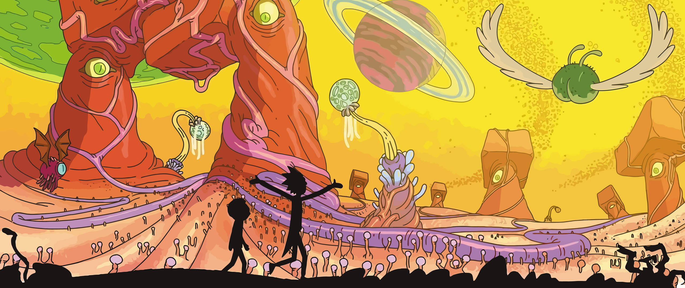
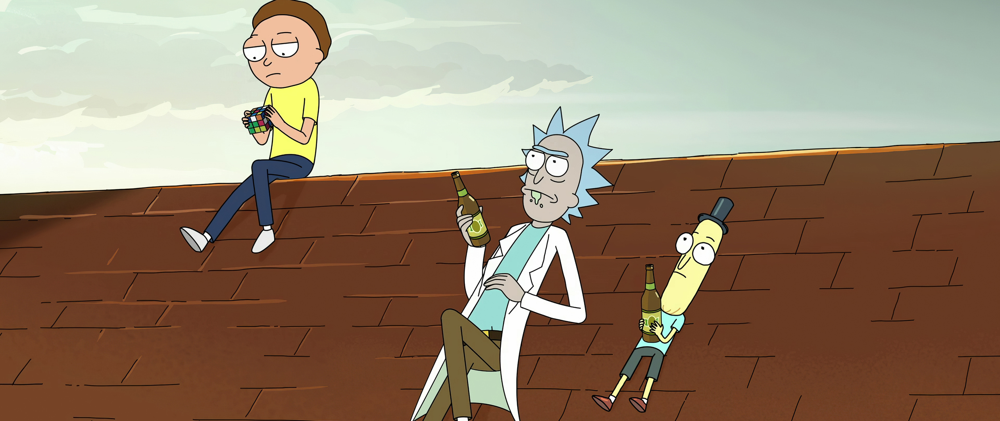
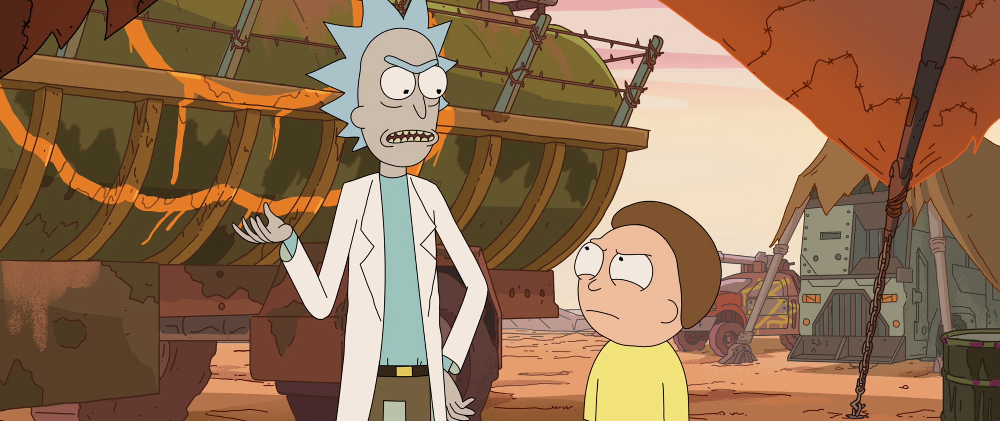
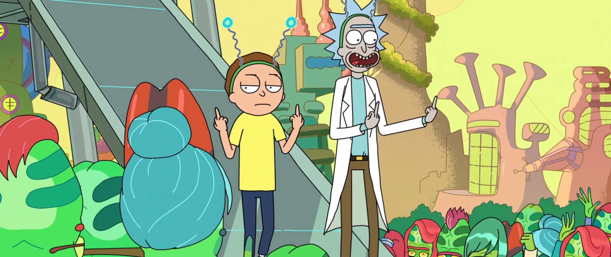
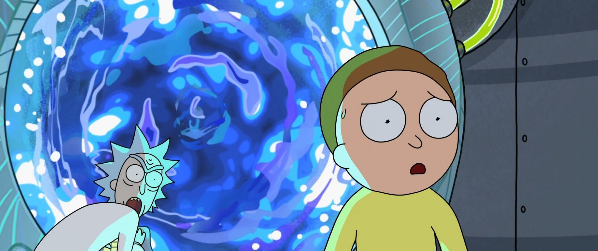
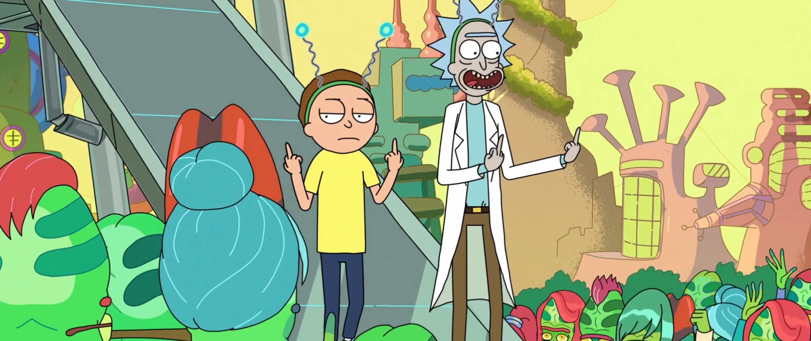
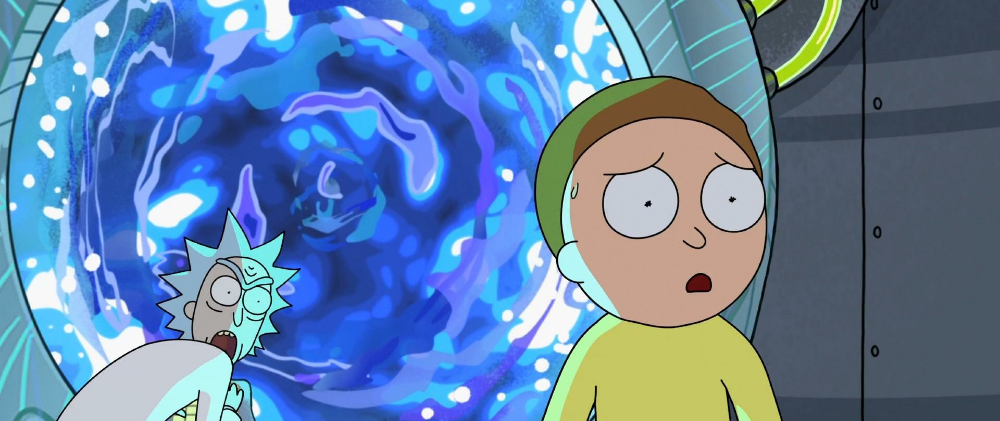
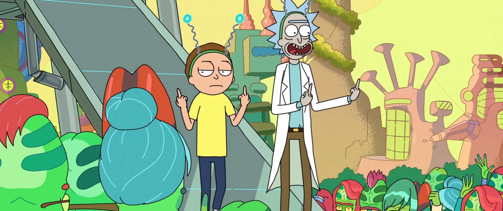
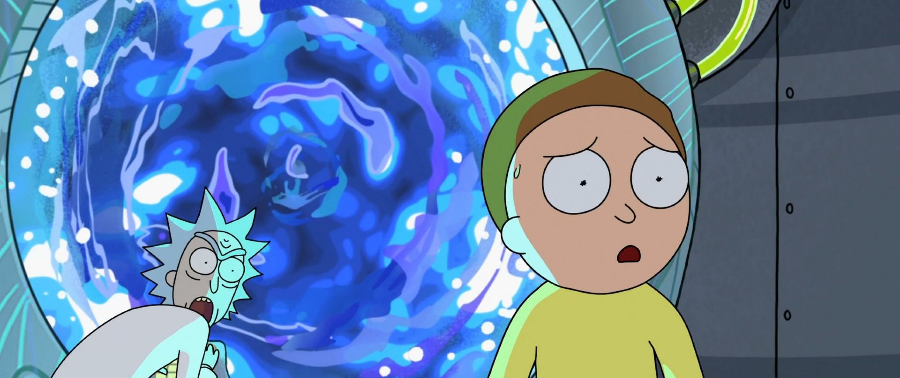
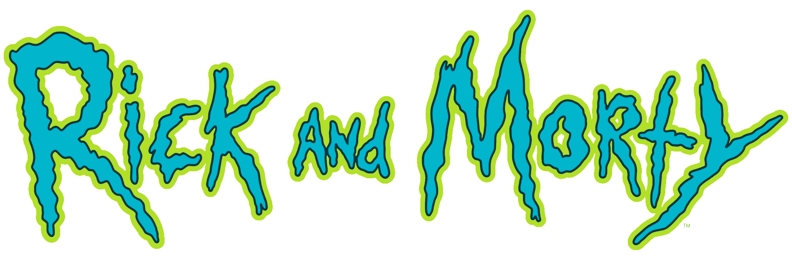

 






Rick é um cientista louco excêntrico e alcoólatra, que evita muitas convenções costumeiras como escola, casamento, amor e família. Ele frequentemente vai em aventuras com seu neto de 14 anos de idade, Morty, um menino de bom coração, mas que também fica facilmente angustiado, cuja bússola moral ingênua mas fundamentada funciona em contraponto ao ego maquiavélico de Rick.